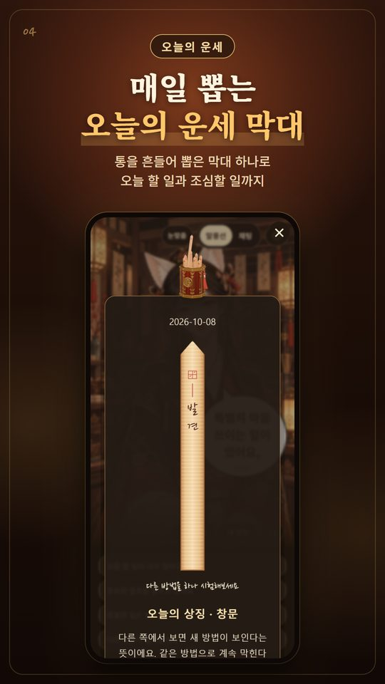
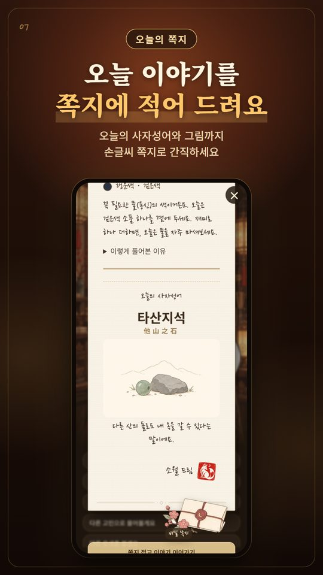

남산의 운세가게는 여우 점원 소월이 내 사주팔자와 오늘의 운세를 쉬운 말로 풀어 주는 무료 사주·운세 앱이에요. 생년월일과 태어난 시각, 태어난 곳을 알려 주면 정확한 만세력으로 사주를 세우고, 풀이는 소월이 한국어 목소리로 한 문장씩 읽어 줘요.
한눈에 보기
- 종류
- 사주·운세 앱 (라이프스타일)
- 플랫폼
- Android 7.0 이상, Google Play
- 가격
- 무료(광고 포함). 광고 제거는 2,900원 한 번 구매
- 언어
- 한국어 (글과 목소리)
- 개인정보
- 생년월일은 기기에만 저장
- 개발
- JellySnow (Google Play 개발자 이름: PIZZA)
남산의 운세가게에서 볼 수 있는 운세
- 사주풀이: 사주팔자 여덟 글자와 오행, 타고난 성격, 일·돈·관계
- 오늘의 운세: 매일 뽑는 운세 막대, 오늘 할 일과 조심할 일, 좋은 시간, 행운색
- 2027년 운세: 2027년을 포함해 앞으로 5년, 해마다의 운세 흐름
- 월운과 대운: 이번 달·다음 달 운세와 10년 단위 대운
- 분야별 운세: 연애운, 금전운, 일·학업운, 전체운
- 띠와 삼재: 내 띠의 삼재가 언제인지
- 오늘의 쪽지와 비밀 쪽지, 사주 카드 저장·공유, 사주 풀이책
정확한 만세력: 이렇게 계산해요
양력·음력(윤달 포함) 생일을 모두 넣을 수 있어요. 기록된 출생 시각은 태어난 곳의 경도와 그때의 서머타임까지 반영해 지역 평균 태양시로 바꾼 뒤 사주를 세워요. 출생지는 서울, 인천, 수원·경기, 춘천, 강릉, 청주, 대전, 전주, 광주, 목포, 대구, 포항, 울산, 부산, 창원, 제주 등 국내 16곳에서 고를 수 있어요.
해는 입춘, 달은 절기를 기준으로 나눠요. 보정 때문에 시주가 바뀌면 보정 전 시주도 함께 보여 줘요. 태어난 시각을 모르면 시주는 비워 두고 아는 것만으로 풀이해요.
쉬운 말로 푸는 사주풀이
사주팔자 여덟 글자와 오행의 균형, 일간으로 보는 타고난 성격, 일과 재능, 돈이 들어오고 나가는 방식, 사람과의 관계까지 풀어요. 어려운 한자 대신 쉬운 말로 풀고, 왜 그렇게 풀었는지 근거도 알려 줘요.
매일 뽑는 오늘의 운세
운세 통을 흔들어 막대를 뽑으면, 그 막대가 왜 나왔는지와 오늘 할 일·조심할 일, 좋은 시간과 피할 시간, 용신으로 고른 행운색까지 알려 줘요. 오늘의 일진이 내 사주와 어떻게 맞물리는지도 볼 수 있어요.
2027년 운세와 앞으로의 흐름
2027년을 포함한 앞으로 5년의 해마다 운세(세운), 이번 달과 다음 달 운세(월운), 10년씩 이어지는 대운을 내 사주에 겹쳐 봐요. 앞으로 1년 중 가장 좋은 때와 조심할 때, 5년 중 가장 좋은 해도 짚어 줘요.
연애운·금전운·일·학업운
지금 마음 상태와 상황에 맞춰 연애의 흐름과 인연이 드는 때, 돈이 새는 곳과 들어오는 때, 일과 공부에서 힘을 낼 때를 풀어요.
띠와 삼재
태어난 해의 글자로 띠를 확인하고, 내 삼재가 언제 시작하고 끝나는지 입춘 기준으로 알려 줘요.
소월의 목소리와 오늘의 쪽지
사주풀이와 운세를 여우 점원 소월이 직접 목소리로 읽어 줘요. 말풍선을 누르면 그 말부터 다시 들려줘요. 오늘 이야기는 손글씨 쪽지에 적어 주고, 그날의 사자성어와 그림, 쪽지 아래 숨은 비밀 쪽지 한 장도 건네요. 운세가 아니어도 오늘 기분을 말하며 소월과 수다를 떨 수 있어요.
앱 화면




사주 앱, 이렇게 사용해 보세요
- 태어난 시간을 모를 때 사주 앱에 어떻게 입력하나요?
남산의 운세가게에서 출생 시각을 모를 때 입력하는 방법, 비워 두는 시주, 대운을 볼 때 필요한 정보를 설명합니다.
- 음력 생일과 윤달, 사주 앱에는 어떻게 넣나요?
남산의 운세가게의 양력·음력 선택과 윤달 입력, 생년월일 재확인 방법을 실제 앱 기준으로 안내합니다.
- 소월이 읽어주는 사주풀이, 처음부터 듣는 방법
목소리로 사주를 읽어주는 남산의 운세가게 사용법. 사주풀이, 오늘의 운세, 다시 듣기와 카드 공유를 안내합니다.
소월의 사주 이야기 · 공식 유튜브
가상 손님의 생년월일로 실제 앱의 사주풀이를 살펴보고, 입력 방법과 앱 이용 소식을 전합니다. 영상 속 이름과 출생 정보는 시연용 가상 정보입니다.
자주 묻는 질문
남산의 운세가게는 무료인가요?
네. 사주풀이와 오늘의 운세는 무료예요. 더 깊은 풀이(대운, 앞으로 몇 년, 달별 흐름, 인연이 드는 때, 풀이책)와 비밀 쪽지는 광고 한 편을 끝까지 보면 그날 하루 열려요. 전체운과 사주 카드 저장·공유도 광고 한 편이면 열려요. 2,900원 한 번 구매로 모든 광고를 없앨 수 있어요.
태어난 시각을 몰라도 사주를 볼 수 있나요?
네. 시주는 비워 두고 연·월·일 세 기둥으로 풀이해요. 대운을 보려면 태어난 시각과 계산용 성별이 필요해요.
음력 생일도 되나요?
네. 음력과 윤달을 고르면 양력으로 바꿔서 계산해요.
만세력은 어떻게 계산하나요?
기록된 출생 시각을 태어난 곳(국내 16곳)의 경도와 그때의 서머타임까지 반영해 지역 평균 태양시로 바꾼 뒤 사주를 세워요. 해는 입춘, 달은 절기를 기준으로 나눠요.
2027년 운세도 볼 수 있나요?
네. 2027년을 포함한 앞으로 5년의 해마다 운세를 입춘 기준으로 풀고, 5년 중 가장 좋은 해도 짚어 줘요.
내 생년월일은 어디에 저장되나요?
앱에 입력한 생년월일은 기기에 저장해요. 광고 등 다른 데이터 처리 항목은 Google Play의 데이터 보안 안내와 개인정보처리방침에서 확인해 주세요.
궁합이나 타로도 되나요?
아직은 안 돼요. 두 사람의 궁합, 타로, 토정비결은 없고, 한 사람의 사주와 운세를 깊이 풀어요.
어떤 언어로 되어 있나요?
한국어예요. 글과 목소리 모두 한국어로 나와요.
사주와 운세는 재미와 생활의 참고로 즐겨 주세요. 투자나 건강처럼 중요한 결정은 전문가와 상의하세요.